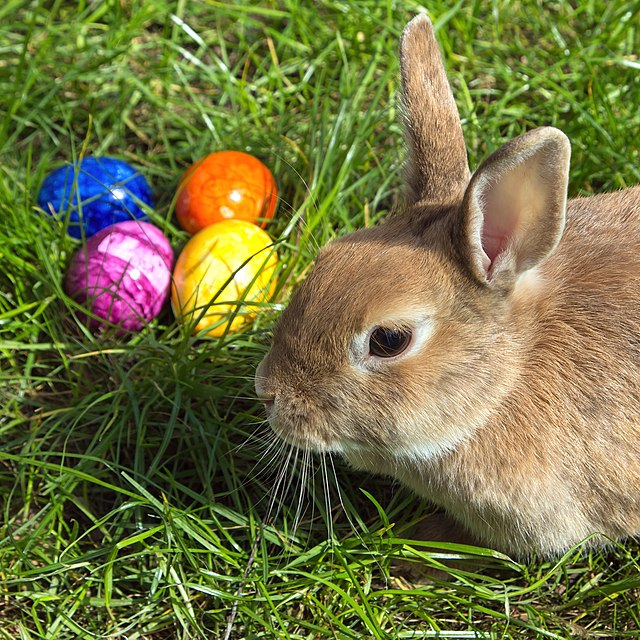
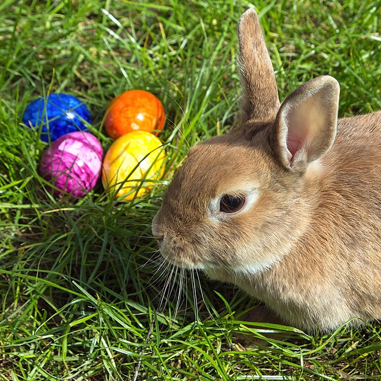

Avertissement !
Ce site est un entraînement pour une formation de développeur web.
Ainsi, toutes les informations données dans ce site (noms, lieux, activités, événements),
sont totalement fictifs.
Ce site est un entraînement pour une formation de développeur web.
Ainsi, toutes les informations données dans ce site (noms, lieux, activités, événements),
sont totalement fictifs.
Notre association vous propose de nombreuses activités tout au long de l'année.
Le but ici, est de retrouver le plaisir de jouer ensemble, loin des écrans. Ces activités vous sont proposées les mercredis et vendredis de 16h à 19h, et les samedis de 14h à 18h.
L'association, encadrée par des adultes et des animateurs, vous propose également des activités pédagogiques, tous les jours de 16h à 19h.
Un coin dédié à la lecture :
nous renouvelons périodiquement les livres proposés grâce à un partenariat avec la médiathèque de City-Ville.Un coin dédié au travail scolaire :
Tous les deux mois environ, une sortie est organisée pour les adhérents de l'association.
Il peut s'agir :
Le choix de la prochaine activité se fait lors d'une réunion préparatoire. N'hésitez pas à nous suggérer des sorties lors de cette réunion.
DiaporamaAfin de récolter des dons pour financer le bon fonctionnement et le bon déroulement des sorties de l'association, nous organisons plusieurs événements.
Le premier samedi du mois d'octobre, nous organisons notre loto.
Le premier samedi du mois de novembre, nous organisons notre réputée bourse aux jouets. Venez vendre vos vieux jouets, ou bien en acheter, c'est comme vous voulez !
Pendant les vacances de Noël, nos jeunes adhérents passerons chez vous pour vous proposer des sachets de truffes au chocolat. Chaque année, cette vente rencontre un réel succès. Nous vous remercions vivement pour votre générosité.

_-_18.jpg) 

Pour le lundi de Pâques, nos jeunes cachent des oeufs au chocolat, dans le parc de la Mairie. Nous invitons toutes les familles à venir profiter de ce moment convivial, au cours duquel, notre association vendra également des oeufs et des sachets de friandises.